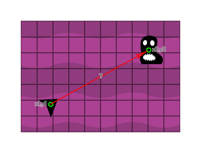

point_distance(x1, y1, x2, y2);
| Argument | Description |
|---|---|
| x1 | The x coordinate of the first component of the vector |
| y1 | The y coordinate of the first component of the vector |
| x2 | The x coordinate of the second component of the vector |
| y2 | The y coordinate of the second component of the vector |
Returns : Real
This function returns the length of a vector formed by the specified components [x1,y1] and [x2,y2]. For example, in the image below if we want to get the distance between the player ship position and the
enemy position so that we can calculate if the enemy is close enough to shoot at then we would use this function (the exact code is in the example below the image) :

var ex, ey;
ex = instance_nearest(x, y, enemy).x;
ey = instance_nearest(x, y, enemy).y;
if point_distance(x, y, ex, ey) < 200
{
instance_create(x, y, obj_Missile)
}
The above code will get the x and y coordinates of the nearest enemy and then use them to check the distance (length) of the vector formed by them and the player coordinates. If the value is less than 200, the player object will create an instance of "obj_Missile".